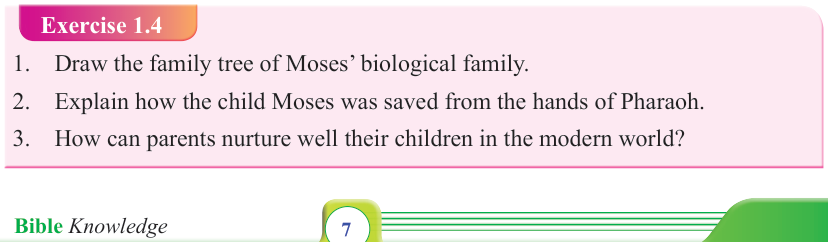
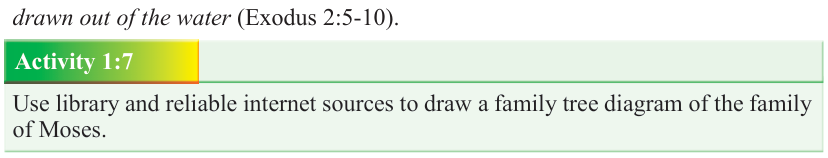

Form Two
Tanzania Institute of Education (TIE)


Bible Knowledge
7



(Numbers 26:59) who later became a great Prophetess. The second one was Aaron, the high priest of God, famously known for his extraordinary love for peace. The last one was Moses, the liberator of the people of God from Egyptian captivity
(Exodus 2:1-10).
The Egyptian prophets predicted the birth of a leader who would liberate the Israelites from slavery. This prediction resulted to the Pharaoh’s instruction toward the killing of all baby boys from Hebrew families at birth. Unfortunately, the inflicted edict against the innocent baby boys failed due to divine intervention. During the course of Pharaoh’s inhumane instruction, Amram’s wife gave birth to her third child, a baby boy, Moses. His parents tried all means to save the child from being killed by
Pharaoh. After all efforts, Amram and Jochebed, the baby’s parents, realized that they could no longer hide the baby. Therefore, Jochebed made a small basket from bulrushes and bitumen. The basket was a waterproof vessel in which she put the baby and set him down among the Papyrus reeds on the bank of the Nile River.
While Jochebed tearfully returned home, her daughter Miriam remained nearby to watch over the baby.
The day was hot and king Pharaoh’s daughter (Bithya) came down to the river accompanied by her maids to take birth in the cool waters of the Nile. Suddenly, she heard the wailing of a small child. At that moment, she found the basket that had an infant baby boy in it. She realized that the baby was one of the babies born of Hebrews. Intrigued by the beauty of the child, Pharaoh’s daughter made arrangements to bring it up in a royal court. While this was happening, there aside was a girl. The girl asked Pharaoh’s daughter if she could get a Hebrew nurse for the child. The girl also run to ask Jochebed to present herself to Pharaoh’s daughter as a maid to nurse the found child. Thus, the child continued being nursed by its mother, and when he grew up, he was brought into Pharaoh’s palace, where the Pharaoh’s daughter brought him up as her own son. Finally, she named him Moses means drawn out of the water (Exodus 2:5-10).

Activity 1:7
Use library and reliable internet sources to draw a family tree diagram of the family of Moses.
Exercise 1.4
1. Draw the family tree of Moses’ biological family.
2. Explain how the child Moses was saved from the hands of Pharaoh.

3. How can parents nurture well their children in the modern world?